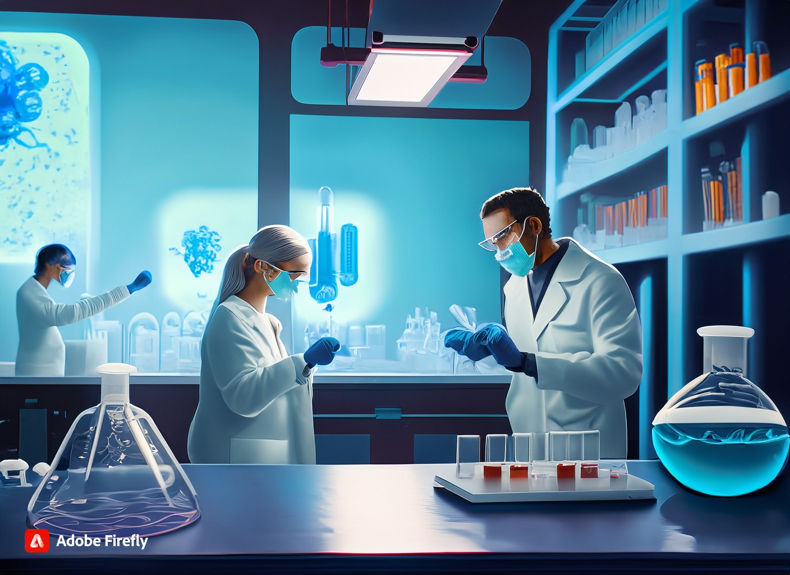

Gameplay Demo


The Game
Please note that Titans Frontier is currently in the development phase, and the web version may still contain some bugs.
Open Source
All our Game and Source code are available in the following repositories:
Game Source Code (https://github.com/ZiyaanMir/Titan-s-Frontier)
Webpage Source Code (https://github.com/EmanIftikhar/nasa-webpage)
How to Play
Move your character using the WASD keys

Interact with NPCs and Lab systems by pressing the E key
Access the map by pressing the M key
Summary of the Game
Embark on a captivating scientific adventure to Saturn's mysterious moon, Titan. Take on the role of Ethan, a skilled scientist, and navigate the challenges of conducting research on this enigmatic world. Join forces with a team of experts led by Dr. Brooks and geologist Fatima Ahmed as you uncover Titan's unique characteristics and gather critical data. Experience the thrill of deep space communication delays and immerse yourself in the wonders of Titan's landscape, atmosphere, and potential water sources. Your mission is to investigate key elements, seeking clues to Titan's habitability. Are you prepared to engage in this scientific exploration and make groundbreaking discoveries? Play now and be part of a mission that may reshape our understanding of distant worlds.
Level 1 - Exploring Titan

Ethan starts his mission in a busy lab, where he meets Dr. Sarah Brooks and Dr. David Chen. Dr. Brooks asks him to get information from the Dragonfly rover on Titan's Mithrim Montes Ridges to learn if Titan is a good place for life. In Task 1, Ethan goes up the tough Mithrim Montes Mountains and meets Mark Foster, who tells him important things about Dragonfly. When Ethan gets to the top, he fixes Dragonfly, connects his tablet, and guesses a four-letter password using Dragonfly's launch year. This shows him cool facts about Titan's icy lakes and methane clouds.
Level 2 - The Search for Water

In this level, Ethan finds himself back at the lab with the collected data in hand. They initiate the data transmission back to Earth, where they learn from Dr. Chen that the communication delay due to vast distances in space can take over an hour for messages to reach Earth, and it might be months before receiving a response. This aspect underscores the isolation of their mission. As the data transmission progresses, Ethan learns about the considerable challenges and time delays associated with space communication, emphasizing the unique conditions of their mission. The primary task, "Drilling for Water," takes Ethan on a journey to a drill site on Titan. Here, he receives a cutting-edge drilling device from Dr. Chen and is joined by Lisa Rodriguez, a geologist, who provides insight into the significance of finding water on Titan. Ethan operates the drill carefully, unearthing pristine water ice beneath the moon's surface. This experience offers valuable knowledge about the complexities of resource extraction in Titan's extreme environmental conditions.
Level 3 - Life

Returning to the lab, Ethan is entrusted with the task of analyzing the water's composition and its potential for habitability. Dr. Brooks guides him through a series of tests, explaining the importance of discovering organic molecules that could hint at life. After conducting the tests, Ethan marveled at the possibility of life existing in Titan's subsurface ocean. As Ethan completes each task, he interacts with various NPCs who share their knowledge about Titan, space communication, drilling, and the hunt for extraterrestrial life.